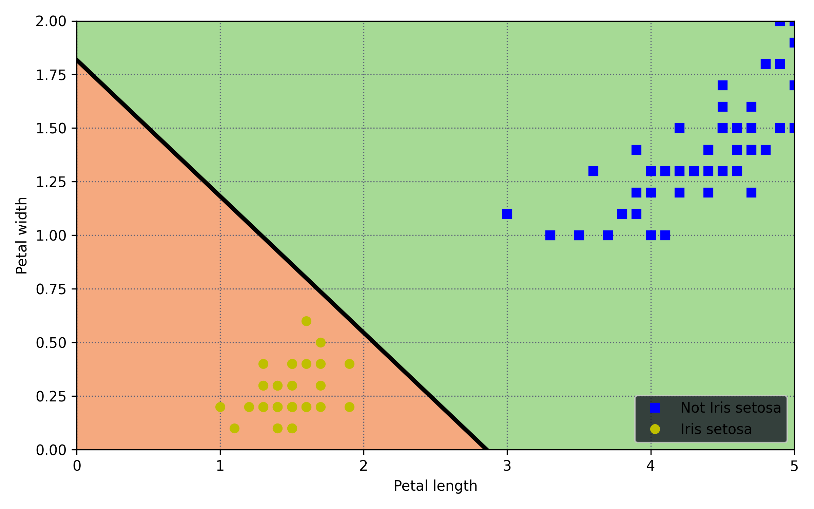
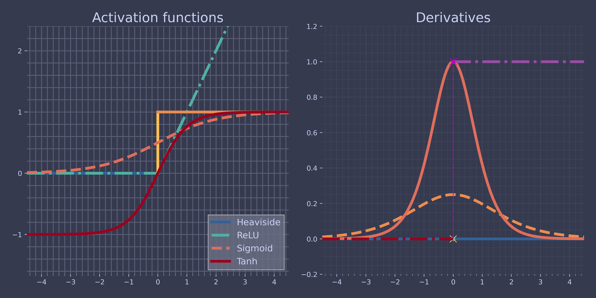
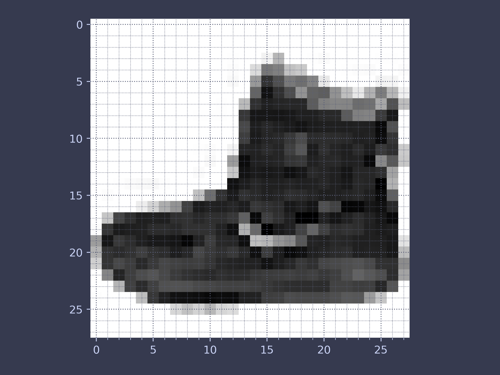
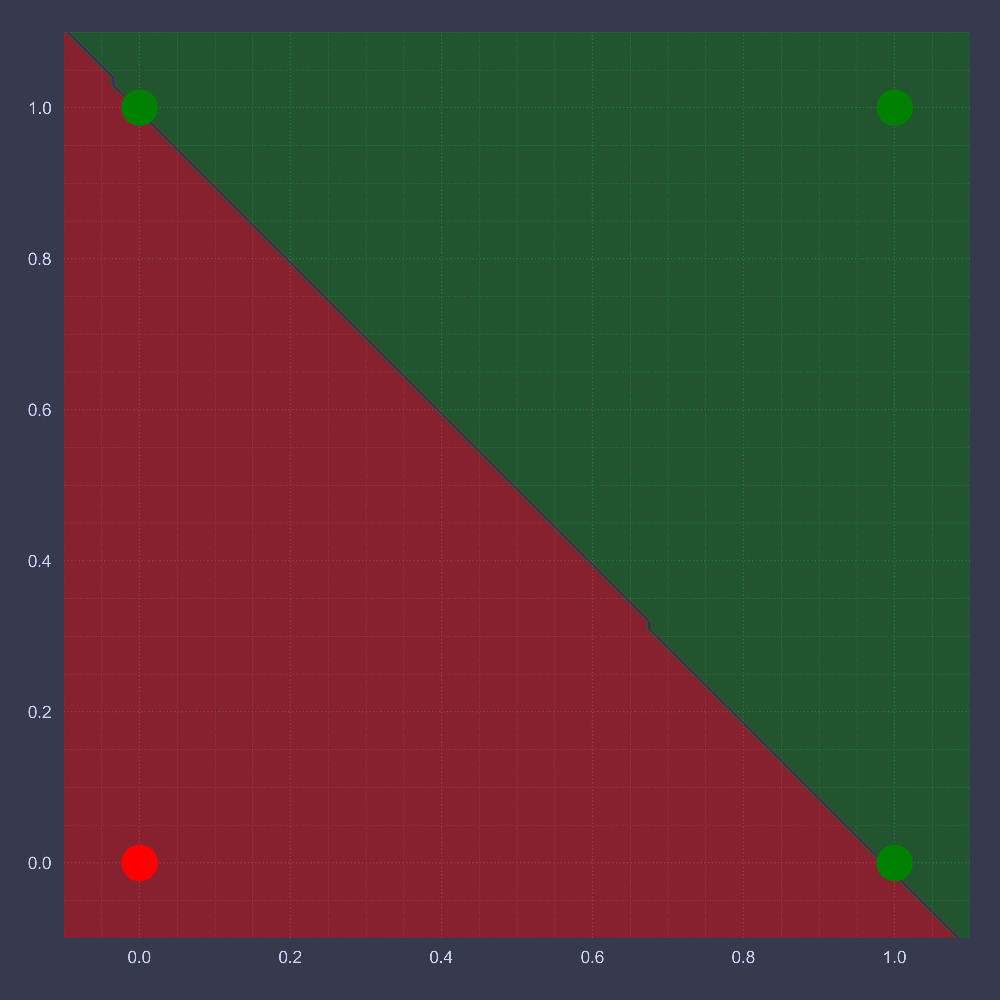
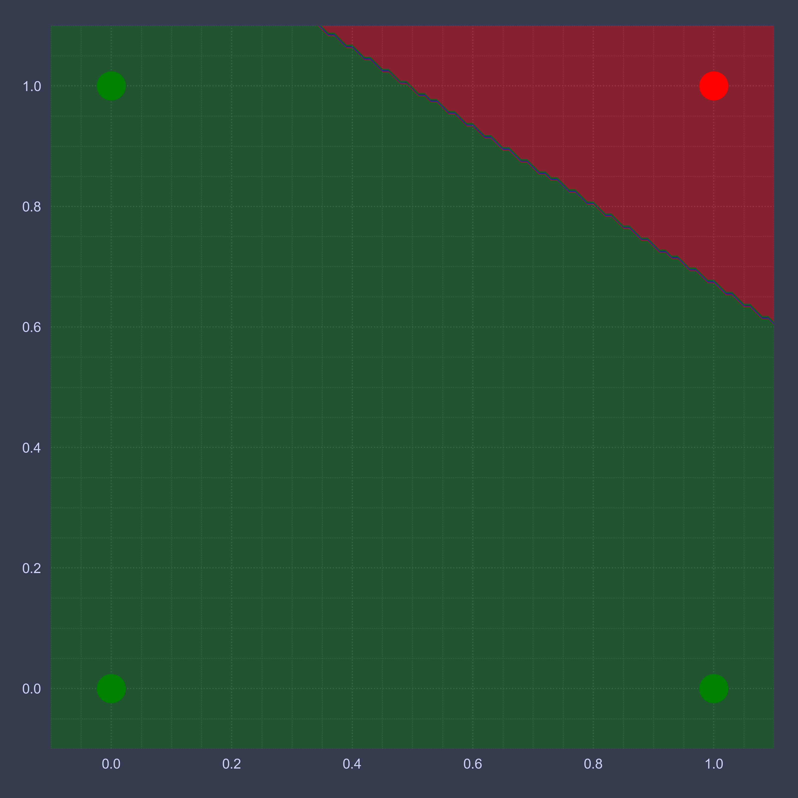
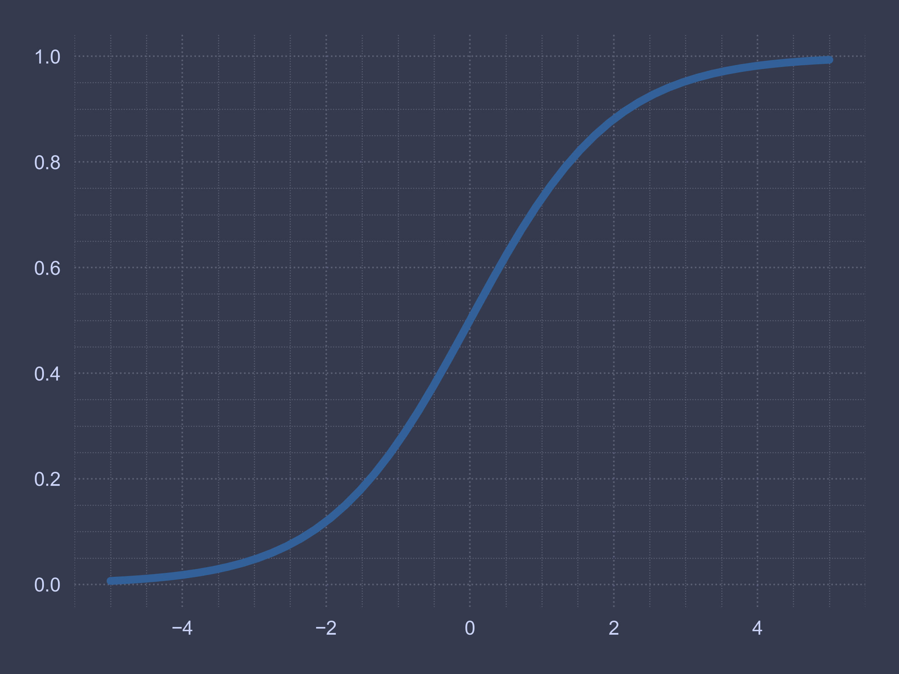
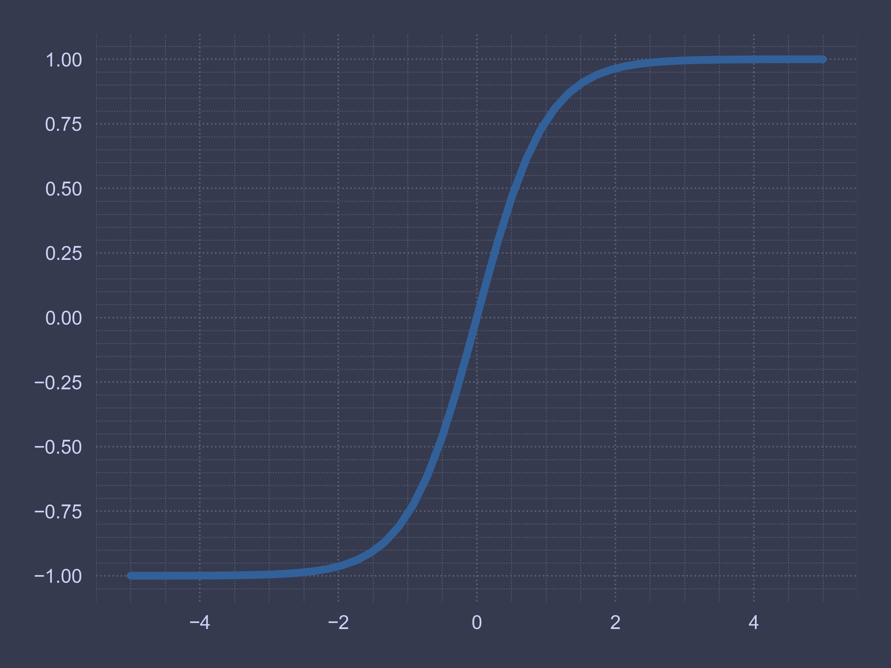
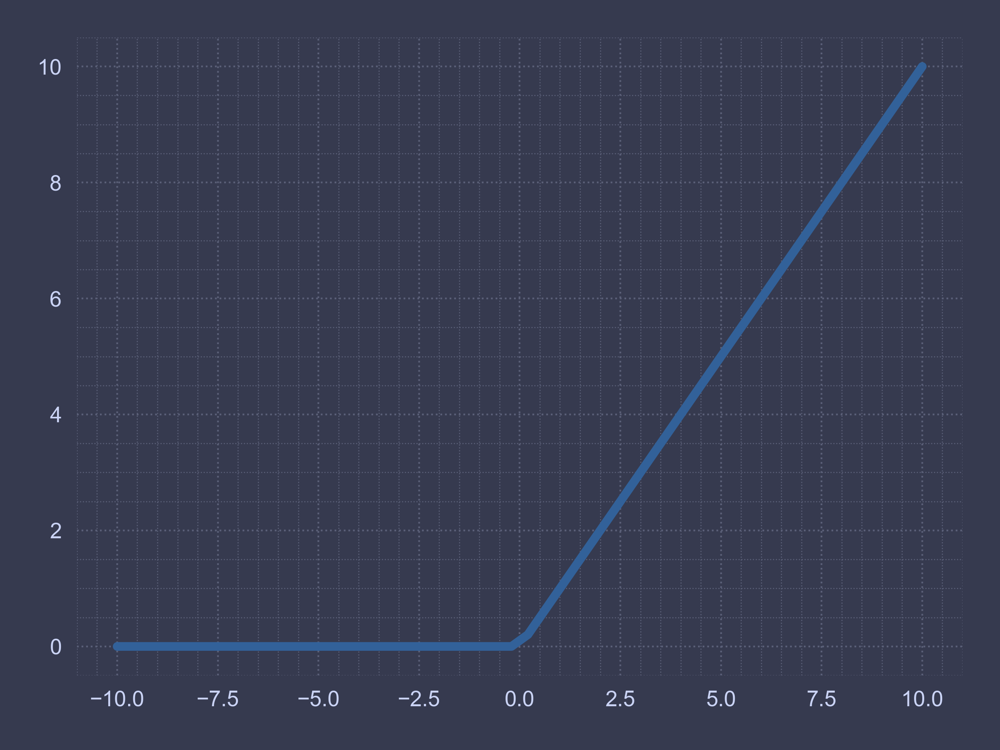

Code for Machine Learning and Data Science II Introduction to Artifical Neural Networks
Table of Contents
These are the code snippets used in Introduction to Artifical Neural Networks
part of Machine Learning and Data Science II.
Introduction
This part focuses on the fundamental programming knowledge of ANNs
Preliminary Setup
To plot images in a consistent style and quality a custom package was written for the module called ChalcedonPy which you can see its source code here.
To install the package, simply install it via pip:
pip install ChalcedonPy
This package needs a save folder path and a style.
In its current state there are two (2) states:
| PARAMETER | FUNCTION |
|---|---|
| web | images used in the code supplement |
| slide | for use in lecture slides. |
import ChalcedonPy as cp # custom-pakcage for lecture materials and publications SAVE_PATH = "Introduction-to-Artificial-Neural-Networks" # sets the default save path style="web" # sets the default rcParams stylce sheet
import tensorflow as tf
In addition, make sure your matplotlib is configured to produce high
quality images.
From Biological to Artificial Neurons
the perceptron (or McCulloch–Pitts neuron) is an algorithm for supervised learning of binary classifiers. A binary classifier is a function which can decide whether or not an input, represented by a vector of numbers, belongs to some specific class.[1] It is a type of linear classifier, i.e. a classification algorithm that makes its predictions based on a linear predictor function combining a set of weights with the feature vector.
The Perceptron
import numpy as np from sklearn.datasets import load_iris from sklearn.linear_model import Perceptron iris = load_iris(as_frame=True) X = iris.data[["petal length (cm)", "petal width (cm)"]].values y = (iris.target == 0) # Iris setosa per_clf = Perceptron(random_state=42) per_clf.fit(X, y) X_new = [[2, 0.5], [3, 1]] y_pred = per_clf.predict(X_new) # predicts True and False for these 2 flowers
Let's check the prediction of the model
print(y_pred)
[ True False]
The Perceptron is equivalent to a SGDClassifier
with loss="perceptron", no regularization, and a constant learning
rate equal to 1:
# extra code – shows how to build and train a Perceptron from sklearn.linear_model import SGDClassifier sgd_clf = SGDClassifier(loss="perceptron", penalty=None, learning_rate="constant", eta0=1, random_state=42) sgd_clf.fit(X, y) assert (sgd_clf.coef_ == per_clf.coef_).all() assert (sgd_clf.intercept_ == per_clf.intercept_).all()
It is important to mention, when the Perceptron finds a decision boundary that properly separates the classes, it stops learning.
This means that the decision boundary is often quite close to one class:
# extra code – plots the decision boundary of a Perceptron on the iris dataset import matplotlib.pyplot as plt from matplotlib.colors import ListedColormap a = -per_clf.coef_[0, 0] / per_clf.coef_[0, 1] b = -per_clf.intercept_ / per_clf.coef_[0, 1] axes = [0, 5, 0, 2] x0, x1 = np.meshgrid( np.linspace(axes[0], axes[1], 500).reshape(-1, 1), np.linspace(axes[2], axes[3], 200).reshape(-1, 1), ) X_new = np.c_[x0.ravel(), x1.ravel()] y_predict = per_clf.predict(X_new) zz = y_predict.reshape(x0.shape) custom_cmap = ListedColormap(['#a6da95', '#f5a97f']) plt.figure(figsize=(8, 5)) plt.plot(X[y == 0, 0], X[y == 0, 1], "s", label="Not Iris setosa") plt.plot(X[y == 1, 0], X[y == 1, 1], "o", label="Iris setosa") plt.plot([axes[0], axes[1]], [a * axes[0] + b, a * axes[1] + b], "k-", linewidth=3) plt.contourf(x0, x1, zz, cmap=custom_cmap) plt.xlabel("Petal length") plt.ylabel("Petal width") plt.legend(facecolor='#181926', loc="lower right") plt.axis(axes) cp.store_fig("perceptron-decision", filepath = SAVE_PATH, style = style, close = True)

Types of Activation Functions
An activation function in the context of neural networks is a mathematical function applied to the output of a neuron. The purpose of an activation function is to introduce non-linearity into the model, allowing the network to learn and represent complex patterns in the data. Without non-linearity, a neural network would essentially behave like a linear regression model, regardless of the number of layers it has.
Lets model some of them and compare their values.
from scipy.special import expit as sigmoid def relu(z): return np.maximum(0, z) def derivative(f, z, eps=0.000001): return (f(z + eps) - f(z - eps))/(2 * eps) max_z = 4.5 z = np.linspace(-max_z, max_z, 200)
And following our functions is the plotting of course.
plt.figure(figsize=(12, 6)) plt.subplot(121) plt.plot([-max_z, 0], [0, 0], "-", label="Heaviside") plt.plot(z, relu(z), "-.", label="ReLU") plt.plot([0, 0], [0, 1], "-") plt.plot([0, max_z], [1, 1], "-") plt.plot(z, sigmoid(z), "--", label="Sigmoid") plt.plot(z, np.tanh(z), "-", label="Tanh") plt.title("Activation functions") plt.axis([-max_z, max_z, -1.65, 2.4]) plt.gca().set_yticks([-1, 0, 1, 2]) plt.legend(loc="lower right", fontsize=13) plt.subplot(122) plt.plot(z, derivative(np.sign, z), "-", label="Heaviside") plt.plot(0, 0, "o", markersize=5) plt.plot(0, 0, "x", markersize=10) plt.plot(z, derivative(sigmoid, z), "--", label="Sigmoid") plt.plot(z, derivative(np.tanh, z), "-", label="Tanh") plt.plot([-max_z, 0], [0, 0], "-.") plt.plot([0, max_z], [1, 1], "-.") plt.plot([0, 0], [0, 1], "m-.", linewidth=1.2) plt.plot(0, 1, "mo", markersize=5) plt.plot(0, 1, "mx", markersize=10) plt.title("Derivatives") plt.axis([-max_z, max_z, -0.2, 1.2]) cp.store_fig("activation-functions-plot", filepath = SAVE_PATH, style = style, close = True)

Regression MLPs
from sklearn.datasets import fetch_california_housing from sklearn.metrics import mean_squared_error from sklearn.model_selection import train_test_split from sklearn.neural_network import MLPRegressor from sklearn.pipeline import make_pipeline from sklearn.preprocessing import StandardScaler housing = fetch_california_housing() X_train_full, X_test, y_train_full, y_test = train_test_split( housing.data, housing.target, random_state=42) X_train, X_valid, y_train, y_valid = train_test_split( X_train_full, y_train_full, random_state=42) mlp_reg = MLPRegressor(hidden_layer_sizes=[50, 50, 50], random_state=42) pipeline = make_pipeline(StandardScaler(), mlp_reg) pipeline.fit(X_train, y_train) y_pred = pipeline.predict(X_valid) rmse = mean_squared_error(y_valid, y_pred, squared=False)
print(rmse)
0.5053326657968588
Classification MLPs
from sklearn.datasets import load_iris from sklearn.model_selection import train_test_split from sklearn.neural_network import MLPClassifier iris = load_iris() X_train_full, X_test, y_train_full, y_test = train_test_split( iris.data, iris.target, test_size=0.1, random_state=42) X_train, X_valid, y_train, y_valid = train_test_split( X_train_full, y_train_full, test_size=0.1, random_state=42) mlp_clf = MLPClassifier(hidden_layer_sizes=[5], max_iter=10_000, random_state=42) pipeline = make_pipeline(StandardScaler(), mlp_clf) pipeline.fit(X_train, y_train) accuracy = pipeline.score(X_valid, y_valid)
print(accuracy)
1.0
Implementing MLPs with Keras
Building an Image Classifier Using the Sequential API
Using Keras to load the dataset
Let's start by loading the fashion MNIST dataset. Keras has a number of functions to load popular datasets in tf.keras.datasets. The dataset is already split for you between a training set (60,000 images) and a test set (10,000 images), but it can be useful to split the training set further to have a validation set. We'll use 55,000 images for training, and 5,000 for validation.
import tensorflow as tf fashion_mnist = tf.keras.datasets.fashion_mnist.load_data() (X_train_full, y_train_full), (X_test, y_test) = fashion_mnist X_train, y_train = X_train_full[:-5000], y_train_full[:-5000] X_valid, y_valid = X_train_full[-5000:], y_train_full[-5000:]
print(X_train.shape) print(X_train.dtype)
(55000, 28, 28) uint8
X_train, X_valid, X_test = X_train / 255., X_valid / 255., X_test / 255.
You can plot an image using Matplotlib's imshow() function, with a 'binary' color map:
plt.imshow(X_train[0], cmap="binary") cp.store_fig("ann-shoe-plot", filepath = SAVE_PATH, style = style, close = True)

y_train
class_names = ["T-shirt/top", "Trouser", "Pullover", "Dress", "Coat", "Sandal", "Shirt", "Sneaker", "Bag", "Ankle boot"]
class_names[y_train[0]]
n_rows = 4 n_cols = 10 plt.figure(figsize=(n_cols * 1.2, n_rows * 1.2)) for row in range(n_rows): for col in range(n_cols): index = n_cols * row + col plt.subplot(n_rows, n_cols, index + 1) plt.imshow(X_train[index], cmap="binary", interpolation="nearest") plt.axis('off') plt.title(class_names[y_train[index]]) plt.subplots_adjust(wspace=0.2, hspace=0.5) cp.store_fig("fashion-mnist-plot", filepath = SAVE_PATH, style = style, close = True)
tf.random.set_seed(42) model = tf.keras.Sequential() model.add(tf.keras.layers.InputLayer(input_shape=[28, 28])) model.add(tf.keras.layers.Flatten()) model.add(tf.keras.layers.Dense(300, activation="relu")) model.add(tf.keras.layers.Dense(100, activation="relu")) model.add(tf.keras.layers.Dense(10, activation="softmax"))
tf.keras.backend.clear_session() tf.random.set_seed(42) model = tf.keras.Sequential([ tf.keras.layers.Flatten(input_shape=[28, 28]), tf.keras.layers.Dense(300, activation="relu"), tf.keras.layers.Dense(100, activation="relu"), tf.keras.layers.Dense(10, activation="softmax") ])
model.summary()
tf.keras.utils.plot_model(model, "my_fashion_mnist_model.png", show_shapes=True)
model.layers
hidden1 = model.layers[1] hidden1.name
model.get_layer('dense') is hidden1
weights, biases = hidden1.get_weights() weights
weights.shape
print(biases)
biases.shape
Compiling the Model
model.compile(loss="sparse_categorical_crossentropy", optimizer="sgd", metrics=["accuracy"])
model.compile(loss=tf.keras.losses.sparse_categorical_crossentropy, optimizer=tf.keras.optimizers.SGD(), metrics=[tf.keras.metrics.sparse_categorical_accuracy])
tf.keras.utils.to_categorical([0, 5, 1, 0], num_classes=10)
np.argmax( [[1., 0., 0., 0., 0., 0., 0., 0., 0., 0.], [0., 0., 0., 0., 0., 1., 0., 0., 0., 0.], [0., 1., 0., 0., 0., 0., 0., 0., 0., 0.], [1., 0., 0., 0., 0., 0., 0., 0., 0., 0.]], axis=1 )
Training and Evaluation
history = model.fit(X_train, y_train, epochs=30, validation_data=(X_valid, y_valid))
history.params
print(history.epoch)
import matplotlib.pyplot as plt import pandas as pd pd.DataFrame(history.history).plot( figsize=(8, 5), xlim=[0, 29], ylim=[0, 1], xlabel="Epoch", style=["--", "--.", "b-", "b-*"]) plt.legend(loc="lower left") # extra code store_fig("keras_learning_curves_plot", style = "web") # extra code plt.show()
plt.figure(figsize=(8, 5)) for key, style in zip(history.history, ["r--", "r--.", "b-", "b-*"]): epochs = np.array(history.epoch) + (0 if key.startswith("val_") else -0.5) plt.plot(epochs, history.history[key], style, label=key) plt.xlabel("Epoch") plt.axis([-0.5, 29, 0., 1]) plt.legend(loc="lower left") plt.grid() plt.show()
model.evaluate(X_test, y_test)
Study: Limits of Single Layer Perceptron
The data we’ll train our model on is the table we saw for the XOR function.
Data Target [0, 0] 0 [0, 1] 1 [1, 0] 1 [1, 1] 0
We need some modules to import but as you can see none of them should be new to you by now.
from itertools import cycle import matplotlib.pyplot as plt import numpy as np import seaborn as sns
We next create our training data. This data is the same for each kind of logic gate, since they all take in two boolean variables as input.
train_data = np.array( [[0, 0], [0, 1], [1, 0], [1, 1]]) target_xor = np.array( [[0], [1], [1], [0]]) target_nand = np.array( [[1], [1], [1], [0]]) target_or = np.array( [[0], [1], [1], [1]]) target_and = np.array( [[0], [0], [0], [1]])
We need to build our Perceptron class but before that lets look at its important methods.
Here, we cycle through the data indefinitely, keeping track of how many consecutive datapoints we correctly classified. If we manage to classify everything in one stretch, we terminate our algorithm.
If not, it resets the counter, updates weights and continue the algorithm.
def train(self): """ Train a single layer perceptron. """ # the number of consecutive correct classifications correct_counter = 0 for train, target in cycle(zip(self.train_data, self.target)): # end if all points are correctly classified if correct_counter == len(self.train_data): break output = self.classify(train) self.node_val = train if output == target: correct_counter += 1 else: # if incorrectly classified, update weights and reset correct_counter self.update_weights(target, output) correct_counter = 0
def _gradient(self, node, exp, output): """ Return the gradient for a weight. This is the value of delta-w. """ return node * (exp - output) def update_weights(self, exp, output): """ Update weights and bias based on their respective gradients """ for i in range(self.input_nodes): self.w[i] += self.lr * self._gradient(self.node_val[i], exp, output) # the value of the bias node can be considered as # being 1 and the weight between this node # and the output node being self.b self.b += self.lr * self._gradient(1, exp, output) def forward(self, datapoint): """ One forward pass through the perceptron. Implementation of "wX + b". """ return self.b + np.dot(self.w, datapoint) def classify(self, datapoint): """ Return the class to which a datapoint belongs based on the perceptron's output for that point. """ if self.forward(datapoint) >= 0: return 1
def plot(self, h=0.01): """ Generate plot of input data and decision boundary. """ # setting plot properties like size, theme and axis limits cp.plot_settings(style) plt.figure(figsize=(20, 20)) plt.axis('scaled') plt.xlim(-0.1, 1.1) plt.ylim(-0.1, 1.1) colors = { 0: "ro", 1: "go" } # plotting the four datapoints for i in range(len(self.train_data)): plt.plot([self.train_data[i][0]], [self.train_data[i][1]], colors[self.target[i][0]], markersize=20) x_range = np.arange(-0.1, 1.1, h) y_range = np.arange(-0.1, 1.1, h) # creating a mesh to plot decision boundary xx, yy = np.meshgrid(x_range, y_range, indexing='ij') Z = np.array([[self.classify([x, y]) for x in x_range] for y in y_range]) # using the contourf function to create the plot plt.contourf(xx, yy, Z, colors=['red', 'green', 'green', 'blue'], alpha=0.4)
Putting this all together we get the Perceptron class,
class Perceptron: """ Create a perceptron. train_data: A 4x2 matrix with the input data. target: A 4x1 matrix with the perceptron's expected outputs lr: the learning rate. Defaults to 0.01 input_nodes: the number of nodes in the input layer of the perceptron. Should be equal to the second dimension of train_data. """ def __init__(self, train_data, target, lr=0.01, input_nodes=2): self.train_data = train_data self.target = target self.lr = lr self.input_nodes = input_nodes # randomly initialize the weights and set the bias to -1. self.w = np.random.uniform(size=self.input_nodes) self.b = -1 # node_val hold the values of each node at a given point of time. self.node_val = np.zeros(self.input_nodes) def _gradient(self, node, exp, output): """ Return the gradient for a weight. This is the value of delta-w. """ return node * (exp - output) def update_weights(self, exp, output): """ Update weights and bias based on their respective gradients """ for i in range(self.input_nodes): self.w[i] += self.lr * self._gradient(self.node_val[i], exp, output) # the value of the bias node can be considered as being 1 and the weight between this node # and the output node being self.b self.b += self.lr * self._gradient(1, exp, output) def forward(self, datapoint): """ One forward pass through the perceptron. Implementation of "wX + b". """ return self.b + np.dot(self.w, datapoint) def classify(self, datapoint): """ Return the class to which a datapoint belongs based on the perceptron's output for that point. """ if self.forward(datapoint) >= 0: return 1 return 0 def plot(self, h=0.01): """ Generate plot of input data and decision boundary. """ # setting plot properties like size, theme and axis limits cp.plot_settings(size = None, style = style) plt.figure(figsize=(8, 8)) plt.axis('scaled') plt.xlim(-0.1, 1.1) plt.ylim(-0.1, 1.1) colors = { 0: "ro", 1: "go" } # plotting the four datapoints for i in range(len(self.train_data)): plt.plot([self.train_data[i][0]], [self.train_data[i][1]], colors[self.target[i][0]], markersize=20) x_range = np.arange(-0.1, 1.1, h) y_range = np.arange(-0.1, 1.1, h) # creating a mesh to plot decision boundary xx, yy = np.meshgrid(x_range, y_range, indexing='ij') Z = np.array([[self.classify([x, y]) for x in x_range] for y in y_range]) # using the contourf function to create the plot plt.contourf(xx, yy, Z, colors=['red', 'green', 'green', 'blue'], alpha=0.4) def train(self): """ Train a single layer perceptron. """ # the number of consecutive correct classifications correct_counter = 0 for train, target in cycle(zip(self.train_data, self.target)): # end if all points are correctly classified if correct_counter == len(self.train_data): break output = self.classify(train) self.node_val = train if output == target: correct_counter += 1 else: # if incorrectly classified, update weights and reset correct_counter self.update_weights(target, output) correct_counter = 0
Let's see if our code will be able to split the XOR diagram.
p_xor = Perceptron(train_data, target_xor) p_xor.train()
You’ll notice that the training loop never terminates, since a perceptron can only converge on linearly separable data. Linearly separable data basically means that you can separate data with a point in 1D, a line in 2D, a plane in 3D and so on.
A perceptron can only converge on linearly separable data. Therefore, it isn’t capable of imitating the XOR function.
Remember that a perceptron must correctly classify the entire training data in one go. The algorithm will never hit the correct counter 4 and therefore will loop indefinitely.
p_or = Perceptron(train_data, target_or) p_or.train() p_or.plot() cp.store_fig("slp-or-plot", filepath = SAVE_PATH, style = style, close = True)

It seems it was able to cut through without much of a problem. Let's look at the NAND gate.
p_nand = Perceptron(train_data, target_nand) p_nand.train() p_nand.plot() cp.store_fig("slp-nand-plot", filepath = SAVE_PATH, style = style, close = True)

p_and = Perceptron(train_data, target_and) p_and.train()
Excellent. It seems both these gates work well. Time to combine them.
def XOR(x1, x2): """ Return the boolean XOR of x1 and x2 """ x = [x1, x2] p_or = Perceptron(train_data, target_or) p_nand = Perceptron(train_data, target_nand) p_and = Perceptron(train_data, target_and) p_or.train() p_nand.train() p_and.train() return p_and.classify([p_or.classify(x), p_nand.classify(x)])
def sigmoid(arr, scale=1): arr = np.asarray(arr) result = 1/(1 + np.exp(-arr*scale)) return result x = np.linspace(-5, 5) y = sigmoid(x) plt.plot(x, y) cp.store_fig("act-sigmoid-plot", filepath = SAVE_PATH, style = style, close = True)

def tanh(arr, scale=1): arr = np.asarray(arr) result = np.tanh(arr*scale) return result x = np.linspace(-5, 5) y = tanh(x) plt.plot(x, y) cp.store_fig("act-tanh-plot", filepath = SAVE_PATH, style = style, close = True)

def relu(arr, scale=1): arr = np.asarray(arr) result = np.maximum(0, arr*scale) return result x = np.linspace(-10, 10) y = relu(x) plt.plot(x, y) cp.store_fig("act-relu-plot", filepath = SAVE_PATH, style = style, close = True)
